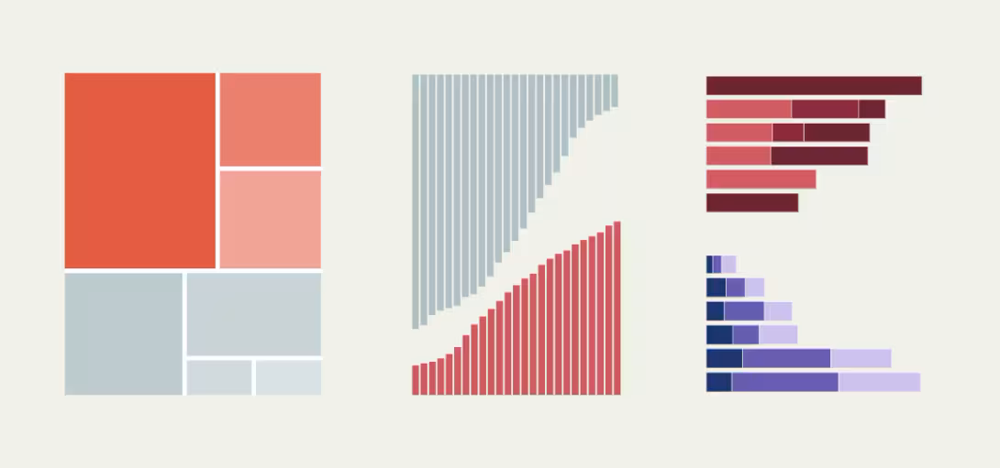

FREELANCE · ENERGY DATA
Global Energy
Monitor dashboard
The Global Coal Plant Tracker presents coal power data across several charts. To compare those views, readers would have had to apply the same filter in each chart. I used the Flourish API to connect them to shared dashboard controls, so readers could make one selection and see every connected chart update together.

Comparing views with one filter
The visualisations were authored separately. I used the Flourish API to pass the dashboard’s selected filter to each connected chart, and worked through sorting and data-mapping edge cases so the charts used the same selection consistently.
Open the dashboard and change a shared filter to compare the same subset of coal power data across views.